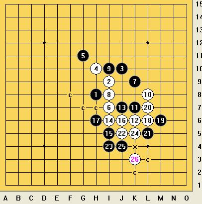

[学术讨论]长星黑7手二打的疑惑
#1 [学术讨论]长星黑7手二打的疑惑作者：岳麓小棋后 发表时间：2009-3-25 23:35:55
=======上图对应的爱五子棋谱代码如下，以便你拆解：========
h8i9j10h10g11i7k9
======================================================
如图，有什么好的线路？
=======上图对应的爱五子棋谱代码如下，以便你拆解：========
h8i9j10h10g11i7k9i8i10l8k7k6j7l7k8
======================================================
这个你怎么看？有没有更好的8手或10手推荐不？
［本站用户 老黄 于 2009-3-26 7:52:41 花5个金币送您鲜花一朵］
［此帖子已被 茗弈小刀 在 2009-4-22 19:32:14 编辑过］
#2 Re:长星黑7手二打的疑惑作者：金瓜 发表时间：2009-3-26 9:02:35
=======上图对应的爱五子棋谱代码如下，以便你拆解：========
h8i9j10h10g11i7k9i8i10l8k7k6j7i6i5j6l6j5
======================================================
［本站用户 茗弈小刀 于 2009-3-26 10:04:13 花5个金币送您鲜花一朵］
［本站用户 岳麓小棋后 于 2009-3-26 11:56:20 花5个金币送您鲜花一朵］
［本站用户 岳麓小棋后 于 2009-3-26 11:56:44 花5个金币送您鲜花一朵］
［ 茗弈小刀 于 2009-3-26 14:49:43 时奖励此帖[金币加 20 威望加1］
#3 Re:长星黑7手二打的疑惑作者：wd1988 发表时间：2009-3-26 9:25:56
这个7是必败，楼上正解。这是一手骗招，最强如下：
=======上图对应的爱五子棋谱代码如下，以便你拆解：========
h8i9j10h10g11i7k9i8i10l8k7k6j7i6i5j6l6j5j8h7
======================================================
［本站用户 岳麓小棋后 于 2009-3-26 11:56:59 花5个金币送您鲜花一朵］
#4 Re:长星黑7手二打的疑惑作者：刀魂 发表时间：2009-3-26 9:34:40
wd 1997 ，每次你都能给出正解 能解释一下吗 为什么 那么强悍。。。
#5 Re:长星黑7手二打的疑惑作者：茗弈小刀 发表时间：2009-3-26 10:03:30
 我的朋友1998一直是很棒的。不过还想请教下17换个方向呢怎么杀？
我的朋友1998一直是很棒的。不过还想请教下17换个方向呢怎么杀？#6 Re:长星黑7手二打的疑惑作者：wrwak 发表时间：2009-3-26 10:45:31
长星是否必胜？#7 Re:长星黑7手二打的疑惑作者：茗弈小刀 发表时间：2009-3-26 10:54:19
长星白优局呀。#8 Re:长星黑7手二打的疑惑作者：潇洒 发表时间：2009-3-26 11:29:59
=======上图对应的爱五子棋谱代码如下，以便你拆解：========
h8i9j10h10g11i7k9i8i10l8k7k6j7i6i5j6h6l7l6j5i4h7g8m8n9j9k10f5g6e7
======================================================
17反向简单杀
［本站用户 岳麓小棋后 于 2009-3-26 11:57:44 花5个金币送您鲜花一朵］
［ 茗弈小刀 于 2009-3-26 14:49:07 时奖励此帖[金币加 20 威望加1］
#9 Re:长星黑7手二打的疑惑作者：岳麓小棋后 发表时间：2009-3-26 12:09:10
这一路算是长星7手二打最强的一路变化，至此终结，不懂这个7手二打的可以继续往下提问#10 Re:长星黑7手二打的疑惑作者：wd1988 发表时间：2009-3-26 13:18:37
看了潇洒的杀，感觉确实是连珠真奇妙，杀棋路线肯定不止一路，像我这么木讷的就只知道冲四活三地杀，潇洒就会做棋杀，差距啊差距~
［本站用户 岳麓小棋后 于 2009-3-26 13:22:47 花5个金币送您鲜花一朵］
［ 茗弈小刀 于 2009-3-26 14:48:20 时奖励此帖[金币加 20 威望加1］
#11 Re:长星黑7手二打的疑惑作者：小玄 发表时间：2009-3-26 16:54:35
=======上图对应的爱五子棋谱代码如下，以便你拆解：========
h8i9j10h10g11i7k9i8i10l8k7k6i6m8
======================================================
=======上图对应的爱五子棋谱代码如下，以便你拆解：========
h8i9j10h10g11i7k9i8i10l8k7k6i6l7
======================================================
补充黑13的杀法，这两个都可以的样子
#12 Re:长星黑7手二打的疑惑作者：就是爱玩 发表时间：2009-3-26 20:42:59
引用----蚂蚁看人会不会像人看天一样，我们体内细胞里的病菌他们对我们这个身体会不会像看一个地球一样，而我们苦苦追求的宇宙是什么样子的，也许地球就是一个大巨人内的一个流动的细胞，我们是这个细胞内的“渺小”。
总算找到一个小棋后的帖子，上面那段话让我有感触，我也觉得我们的宇宙无限大无限久远，人类只是宇宙中生命的一种形式，那些高级进化的生命遍布于无垠的宇宙之中。
［本站用户 岳麓小棋后 于 2009-3-26 20:58:33 花5个金币送您鲜花一朵］